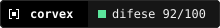

Sign in with SSO
Microsoft Entra ID, Google Workspace, Okta and any OpenID Connect provider. Roles from groups, the second factor can be delegated, a local admin is always there for emergencies.
From the first scan to the pull request, from the issue to the team chat. Everything Corvex does, page by page.
Almost every dashboard lives behind a sign-in. Give the target a sign-in profile and the agents test the private area too.
For many issues the fix is already written. You approve it and Corvex applies it with a backup, or opens a pull request.
// JACKAL · session cookie readable by JavaScript- res.cookie("session", token)+ res.cookie("session", token, {+ httpOnly: true, secure: true, sameSite: "strict"+ })
Corvex runs the code agents on every pull request and blocks the merge when the change adds an issue. It works from a team machine with Corvex installed, or through your company's Corvex server.
on: pull_request
jobs:
corvex:
runs-on: [self-hosted, corvex] # a team machine with Corvex installed
steps:
- uses: actions/checkout@v4
with: { fetch-depth: 0 }
- run: python $CORVEX_HOME/corvex_scan.py . --base origin/main --fail-on alta --sarif corvex.sarif
- uses: github/codeql-action/upload-sarif@v3
with: { sarif_file: corvex.sarif }
A team chat inside Corvex, and a discussion inside every issue: comments, mentions, an owner and a due date.
Critical issue, scan completed, an issue coming back, the score dropping, mentions and assignments. You choose when, Corvex never sends evidence or code.
Paste the incoming webhook address and the alerts arrive in the channel you choose.
«create ticket» on an issue opens a ticket with title, severity, location and fix procedure.
A JSON signed with HMAC-SHA256 for your own services, with a timestamp against replays.
Https only, only to the configured domain, never to internal addresses. Addresses and tokens encrypted.
Microsoft Entra ID, Google Workspace, Okta and any OpenID Connect provider. Roles from groups, the second factor can be delegated, a local admin is always there for emergencies.
The reviewer sees overview, issues, reports and logs. The server refuses every action, not just the buttons.
Sign-ins, roles, scans, fixes, ignored issues with their reason. Every line chained to the previous one, exported as CSV or JSON.
PDF or Markdown, in Italian or English, mapped to OWASP, GDPR art. 32 and ISO 27001. CycloneDX SBOM for every project.

Claude Code, Cursor and Windsurf use Corvex through MCP, with a server hardened against instructions hidden in code and websites.